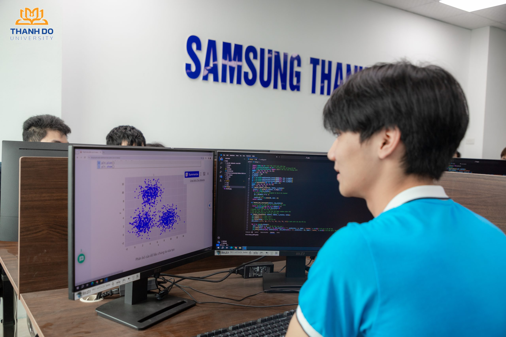

Công nghệ thông tin
Tổng quan
Công nghệ thông tin hay gọi tắt là IT (Information Technology) là thuật ngữ chỉ việc sử dụng hệ thống máy tính và các yếu tố công nghệ, kỹ thuật để xử lý, trao đổi, tổ chức và quản lý thông tin. Đào tạo sinh viên ngành công nghệ thông tin là đào tạo các kỹ sư đảm nhận khai thác, thiết kế, xử lý hệ thống thông tin, dữ liệu để tổ chức, thiết lập các ứng dụng, phần mềm.
- Mã ngành: 7480201
- Định hướng đào tạo: Khoa học dữ liệu và trí tuệ nhân tạo, Hệ thống thông tin
- Thời gian đào tạo: Tùy thuộc vào đối tượng đầu vào (Trung cấp, Cao đẳng, Đại học)
- Trình độ đào tạo: Kỹ sư
- Học phí: 370.000 đồng/1 tín chỉ

Chương trình đào tạo
Tổng số tín chỉ của chương trình đào tạo (Chưa tính các học phần Giáo dục thể chất, Giáo dục Quốc phòng – An ninh, tiếng Anh chuẩn đầu ra): 150 tín chỉ
- Kiến thức giáo dục đại cương: 41 tín chỉ
- Kiến thức giáo dục chuyên nghiệp: 82 tín chỉ
- Học kỳ doanh nghiệp: 20 tín chỉ
- Đồ án tốt nghiệp/Các học phần thay thế ĐATN: 7 tín chỉ
Bản mô tả chi tiết chương trình đào tạo: Xem tại đây
Triển vọng nghề nghiệp
Cơ hội việc làm sau khi tốt nghiệp: Sinh viên CNTT sau khi tốt nghiệp có thể đảm nhận nhiều vị trí khác nhau tùy vào chuyên môn, kỹ năng và định hướng nghề nghiệp. Các vị trí việc làm phổ biến bao gồm:
- Lập trình viên (Software Developer, Web Developer, Mobile Developer): Phát triển phần mềm, ứng dụng web, ứng dụng di động
- Kỹ sư phần mềm (Software Engineer): Thiết kế, xây dựng, bảo trì hệ thống phần mềm phức tạp
- Chuyên viên kiểm thử phần mềm (QA/QC, Tester): Đảm bảo chất lượng sản phẩm phần mềm trước khi triển khai
- Kỹ sư dữ liệu (Data Engineer), nhà khoa học dữ liệu (Data Scientist): Làm việc với dữ liệu lớn, trí tuệ nhân tạo (AI), học máy (Machine Learning)
- Chuyên gia an ninh mạng (Cybersecurity Specialist): Đảm bảo an toàn thông tin, bảo mật hệ thống
- Quản trị hệ thống (System Administrator), Quản trị mạng (Network Administrator): Quản lý, vận hành hệ thống CNTT của tổ chức
- Chuyên viên phát triển AI, IoT: Thiết kế và ứng dụng công nghệ thông minh vào thực tế
- Chuyên viên kinh doanh công nghệ (IT Business Analyst, IT Sales): Tư vấn, kinh doanh sản phẩm và giải pháp công nghệ